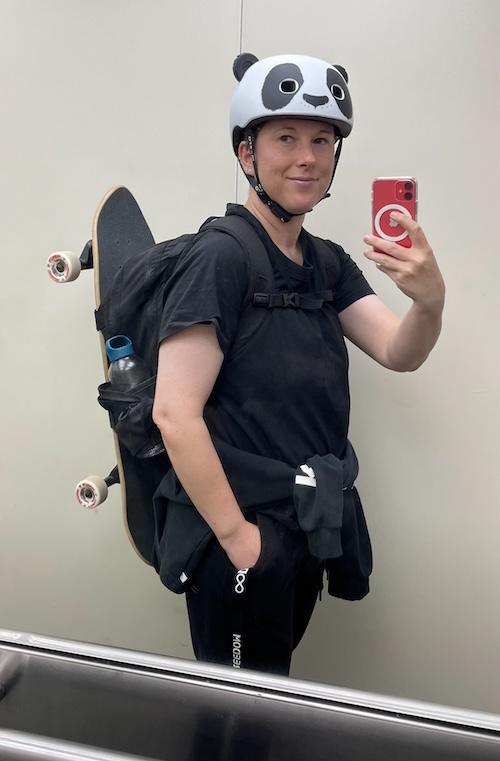
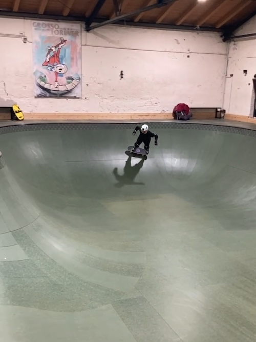
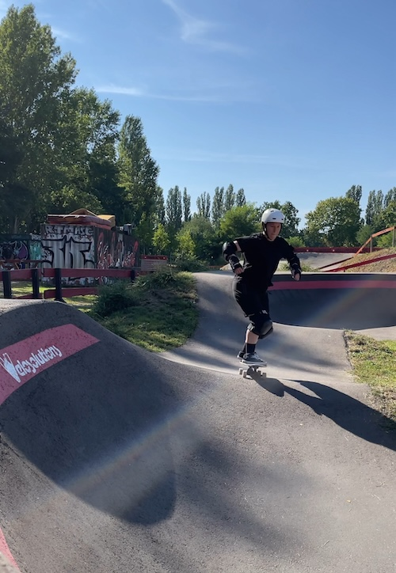
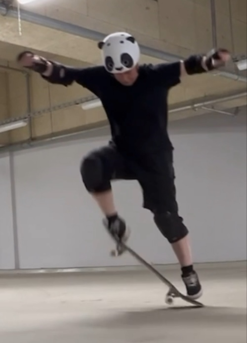
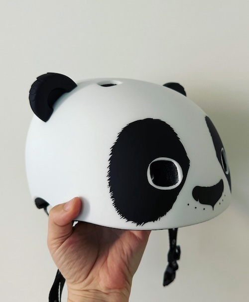
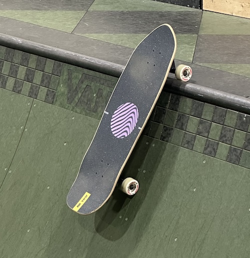
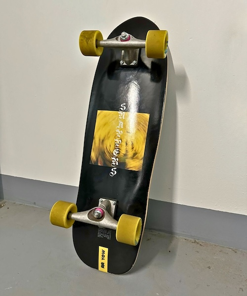
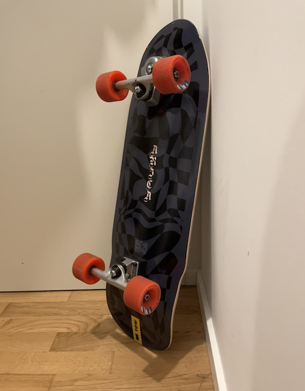
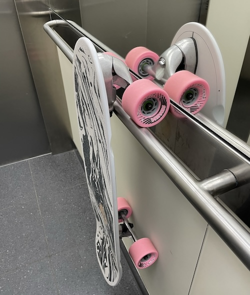

About me
Hi, I’m Denise Nepraunig. I began my journey with skateboarding and surfskating at the age of 36, back in August 2021. Though native to Austria, I currently reside in the vibrant city of Berlin.
You can find me on Instagram as @denisenepraunig and I am very active in the Surfskate Berlin group. You can also find me on YouTube as @DeniseNepraunig.

I enjoy cruising around in bowls and on pump tracks on my surfskate.
📍 Skatehalle Berlin, Germany, new bowl since 2022 
📍 Pumptrack inside Mellowpark Berlin, Germany 
I love the flowy feeling of surfskates and I don’t use them as surftrainers because I can’t surf. As far as my skatebording abilities go, I’m still working on my ollie and it will be a long way until my first kickflip.

Helmet

I consistently endeavor to wear a helmet, and recently, I discovered an adorably cute panda helmet from Microscooter. I wear size M.
Bowl Setup - Grasp

I have a quiver of different surfskates. For bowl riding I enjoy riding the Graps trucks on a Yow Snappers 2023 deck paired with some 64mm Powell Peralta Dragon wheels and with Bronson G3 Speed bearings. The Graps trucks are kind of like the CX trucks but have way more lean.
Here is a 🎥 YouTube video of me riding this setup.
Pumptrack Setup - Carver CX

For the pumptrack I have Carver CX trucks and yellow 86A Orangatang Stimulus wheels on a Yow Snappers 2022 deck. Link to the 2023 Snappers version. I use the hot pink 87.5a Riptide Carver CX bushings with 96a Riptide Pivot Cups.
Here is a 🎥 YouTube video of me riding this setup.
Flat Cruising Setup - Yow Meraki S5

For flat cruising I have a Yow Meraki S5 with the Yow Arica 2023 deck with orange 80A Orangatang Stimulus wheels. I use the green 90a Krank Short Street Cone & Street Barrel.
City Riding - Slide 3.0

For rough Berlin sidewalks I have a kind of a monster truck setup with Slide 3.0 trucks on a Slide Gussie Stingray deck with BubbleGum 77A Seismic 78mm BLAST WAVE Wheels.
Here is a 🎥 YouTube video of me riding this setup.